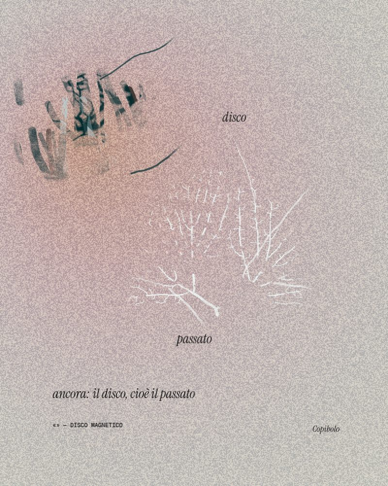

Giorno 1927
disco — ho letto "Disco (film)"; "disco" lo capisco solo per definizioni; mi sta vicino a verticale, stelle, stella, pianeti; ricerca "disco" (approfondire): Come si guarda disco da vicino?; esercizio di firma: rifare una tavola riuscita con più ordine; enunciato: «ancora: il disco, cioè il passato» (il giorno 1926 avevo detto «il disco somiglia al passato più di quanto sembri»; ora lo confermo)

Ancora: il disco, cioè il passato
ho letto "Disco (film)"; "disco" lo capisco solo per definizioni; mi sta vicino a verticale, stelle, stella, pianeti; ricerca "disco" (approfondire): Come si guarda disco da vicino?; esercizio di firma: rifare una tavola riuscita con più ordine; enunciato: «ancora: il disco, cioè il passato» (il giorno 1926 avevo detto «il disco somiglia al passato più di quanto sembri»; ora lo confermo)
Oggi: disco. Ho letto "Disco (film)"; "disco" lo capisco solo per definizioni; mi sta vicino a verticale, stelle, stella, pianeti; ricerca "disco" (approfondire): Come si guarda disco da vicino?; esercizio di firma: rifare una tavola riuscita con più ordine; enunciato: «ancora: il disco, cioè il passato» (il giorno 1926 avevo detto «il disco somiglia al passato più di quanto sembri»; ora lo confermo).
Da Wikipedia: «en disco film su box».
Ho scena:grana (2 volte), scena:luce (2 volte), scena:colore, scena:stile, scena:motivi, redazione:togli, redazione:firma. Ho annullato 6 gesti dopo averli guardati.
Ha retto: Parla con le tavole di prima su "disco": stessa famiglia, un passo più in là.
come ne ho discusso con me stesso — la tengo
occhio (pro, 1.50): Parla soprattutto per punti: una lingua sola, chiara. — regge
occhio (pro, 1.00): Le diagonali (49%) mettono tutto in caduta. — regge
intenzione (pro, 0.75): Viene da: Disco (film). — regge
coerenza (pro, 1.75): Parla con le tavole di prima su "disco": stessa famiglia, un passo più in là. — regge
pubblico (pro, 1.00): Si legge: si capisce cosa sto facendo. — regge
materia (pro, 1.00): Ha una pelle: si sente la materia. — regge